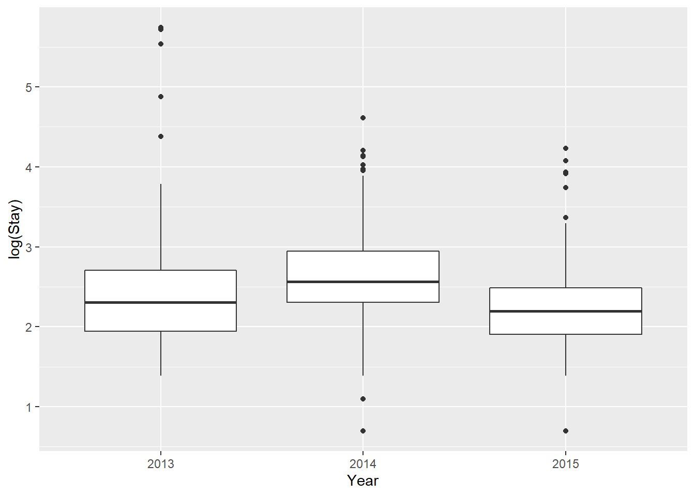
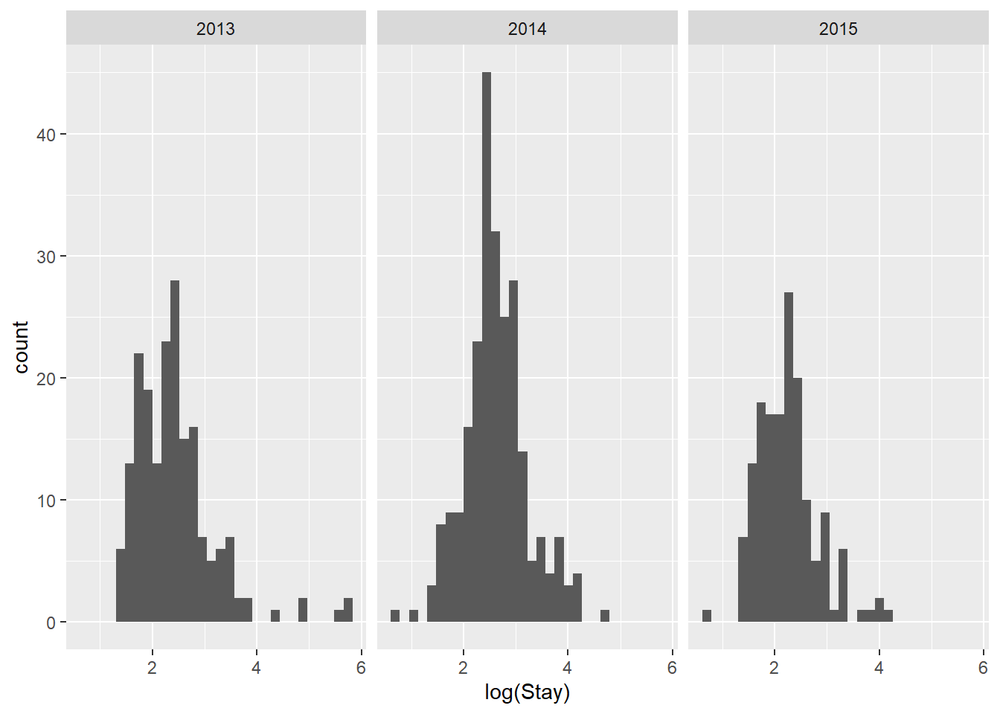
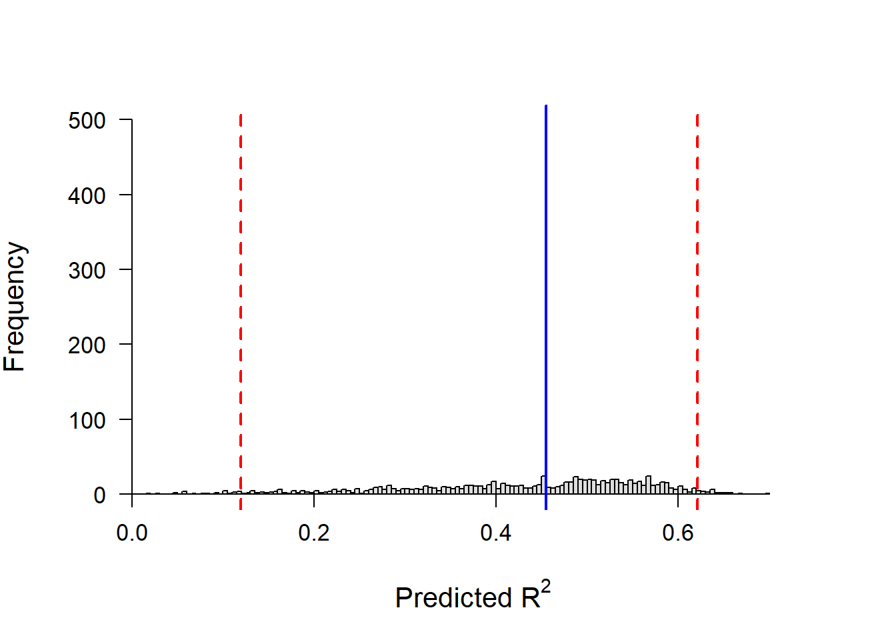

9.6 Normality of residuals
In all linear models we make the assumption that the residual error of our model is normally distributed with a mean of zero. This allows us to drop the error term, \(\epsilon\) from computation in the model fitting and allows us to calculate an exact solution in the case of ANOVA and linear regression (technological advances have really made this unecessary because we can solve everything through optimization now).
There are a multitude of tools at our disposal for examining normality of the residuals for linear models. One option is to examine group-specific error structures as a surrogate for residual error prior to analysis. The other option is to examine diagnostic plots of residuals directly from a fitted model object in R or other software programs (this is actually the more appropriate tool).
9.6.1 Data exploration
What are we looking for here? We are looking to see if the response variable within each group is normally distributed. To assess this, we need to think in terms of the moments of a normal distribution that we learned about earlier in the course, specifically skew and kurtosis. Here we are looking for outliers in the data, or sample distributions that are highly skewed.
First, we could go level by level for all of our grouping variables and conduct Shapiro tests (not shown here).
We can look at a few different plots of our response to start teasing apart some of the potential violations of our assumptions.
We know we will need to look at a year effect here because that is yet another form of non-independence (and potentially homogeneity) in our data. Let’s start with a boxplot:
ggplot(turtles,
aes(x = factor(Year), y = Stay, group = Year), fill = 'gray87') +
geom_boxplot() +
xlab("Year")
Whoa! We have a couple of issues here.
First of all: we have clearly identified a number of ‘outliers’ in our data. These are the circles that are outside the whiskers of our boxplots.
One way to address these outliers is by dropping them from the data. We only want to do this if we have a pretty good justification for this ahead of time (“a priori”). And, sometimes these can be some of the most interesting observations.
Another way to deal with this is through data transformation. For example, we could use a log transformation in an attempt to normalize extreme values in our data. This certainly looks a little better, but may not get us all the way there…
ggplot(turtles,
aes(x = factor(Year), y = log(Stay), group = Year),
fill = 'gray87') +
geom_boxplot() +
xlab("Year")
NOTE: I will not cover variable transformation extensively in this class. The justification is: 1) you can Google it to learn more about what transformations are useful for what, and 2) I will argue that most of the time there are better methods for dealing with non-normal data and then I will show you how to use those methods.
We can also look at histograms to investigate normality:

par(mfrow=c(1,3))
hist(turtles$Stay[turtles$Year==2013], main='', col='black')
hist(turtles$Stay[turtles$Year==2014], main='', col='black')
hist(turtles$Stay[turtles$Year==2015], main='', col='black')Clearly these data are not normal! So we try a log transformation.

par(mfrow=c(1,3))
hist(log(turtles$Stay[turtles$Year==2013]), main='', col='black')
hist(log(turtles$Stay[turtles$Year==2014]), main='', col='black')
hist(log(turtles$Stay[turtles$Year==2015]), main='', col='black')Again, a little better, but perhaps not as good as we’d like.
9.6.1.1 Residual analysis
The preferred method for examining the normality of residuals for us is going to be actually looking at the diagnostics from a fitted model object:
# Set up a plotting window so we can see 4 plots at once
par(mfrow=c(2,2))
# Plot the residual diagnostics
plot(lm(Stay~Year, data=turtles))
Cool! But…what the heck are we looking at here??
Top left: residuals vs fitted values- this shows us how the residual error changes between groups (see below). This also shows us that we have clearly violated the assumption that the residuals are normally distributed with a mean of zero.
Top right: this is the one we are most interested in for examining the normality of our residual errors. If our residuals are normally distributed, then the points on this plot should (approximately) follow the straight, dotted line here. It does not! Q-Q plots, like others, can also be useful for identifying outliers in our data. These are labeled.
Bottom left: we will discuss below
Bottom right: this plot is useful for identifying points that might be exerting undo influence on the intercept and slope of the line that we are trying to fit here. In general we are looking for values of Cook’s D greater than \(\frac{4}{(N-k-1)}\) where \(N\) is sample size and \(k\) is number of explanatory variables, if we are going to set a threshold: check it out.
Here, we see that most of our data are within this, but it looks like we actually have much bigger problems based on previous plots.
We can hit the data with a log transformation to see if it fixes any of our problems:

In fact, we see that the model fit has improved substantially, although the outliers in our data are still outliers.
Finally, what if we have a continuous explanatory variable? We use the same approach:

Which leads us to our next assumption…